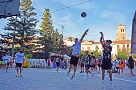

Vídeo de Youtube
Una festa que no deixa indiferent
La festa major
Un any més, el programa de la Festa Major de Súria convida a participar-hi i a gaudir d'aquest temps tan especial de celebració i de retrobament.
La Festa Major de Súria se celebra al voltant del 10 de juliol, diada de Sant Cristòfol, un dels patrons de la vila. El dia central de la Festa Major és el diumenge coincident o posterior a aquesta data.
La Festa Major de Súria és una festa del segle XXI que intenta preservar el mateix esperit amb què la van viure els nostres avantpassats. La festa és la baula que des del present ens connecta amb els valors del passat i ens prepara per a un futur que esperem més integrador, just i solidari.
Un motiu pel qual ens fa retrobar amb els amics i familiars
Maria Hernández, vilatant de súria.
Activitats
Com a totes les festes majors, hi ha un seguit d'activitats, on les de Súria no et deixen indiferent.
- Concerts: Es pot gaudir de concerts diferents díes de la festa major. On hi ha orquestres de ball, grups de versions, etc.
- Campionats esportius: Els més joves participen en una competició que dura tres dies, on a l'últim es fan jocs especials. 
- Castells: El grup "Els salats" i d'altres pobles fan castells humans.
- Castell de focs L'últim acte es un castell de focs on el cel s'omple de colors.